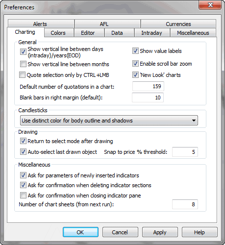
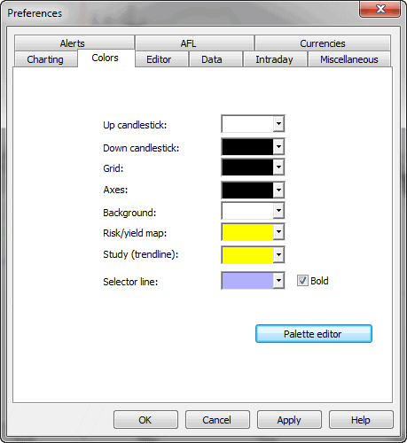
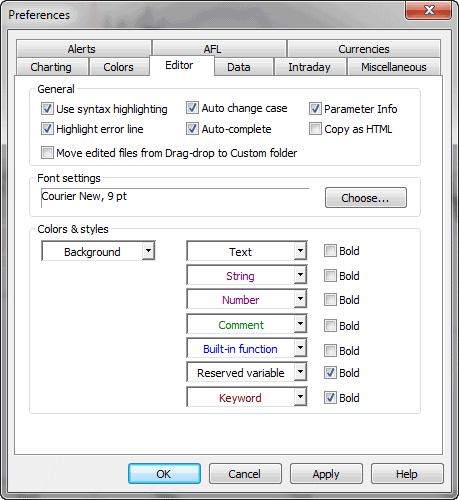
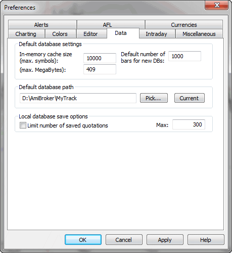
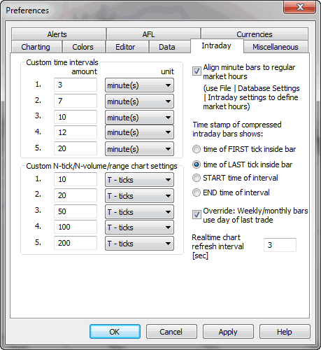
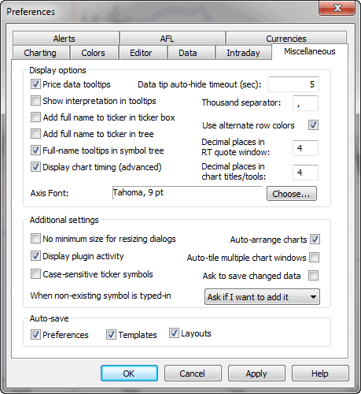
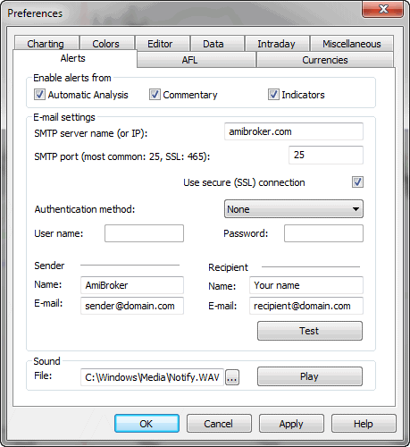
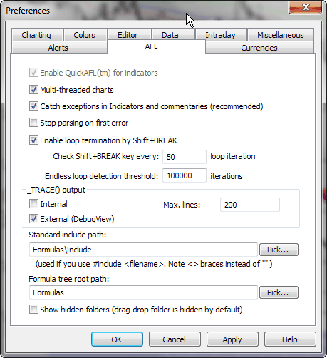
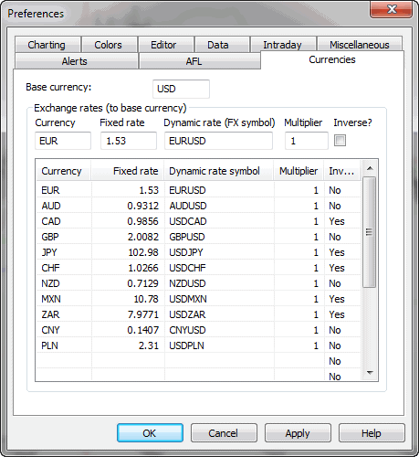

Preferences window

Charting tab - allows you to modify charting options
- Default number of quotations in a chart - this sets the number of
bars initially displayed in the chart. (In other words, it defines "normal"
zoom range)
- Blank bars in right margin - defines how many blank bars are added in the
right margin (past the last available quote). This blank margin allows you
to project studies (trend lines, for example) into the future
- Quote selection only by CTRL+LMB - this decides how the vertical selection
line is invoked. When this box is unchecked, a single click on the chart causes
the display of the selection line; when this box is checked, you have to hold
down the CTRL key while clicking to get the selection line
- Show vertical line between days (intraday)/years(EOD) - this decides
if a dotted vertical line is displayed on the chart to mark day (in intraday
mode) or year (in EOD mode) boundaries
- Show value labels - this decides if value labels for indicator /
price chart lines should be displayed. See basic
charting guide for an explanation of what a value label is.
- Candlesticks - this setting provides detailed control over the appearance
of candlesticks. A distinct color may be used to draw part of the candlestick,
or the entire candle may be drawn in the same color as its interior.
- Drawing
- Return to select mode after drawing - when checked, the current tool
is deactivated after drawing and select mode is entered; when unchecked,
the currently selected drawing tool remains active after drawing (allows
you to plot one study after another; note that the same effect can be achieved
even if this box is checked, it is enough to hold down the SHIFT key while
drawing and the tool will remain active)
- Auto-select last drawn object - this useful feature automatically
selects the recently drawn object. This allows you to hit ALT+ENTER to display
the properties box immediately without the need to click on the study, and
allows you to copy the study via CTRL+C also without an additional click
- Snap to price % threshold - defines how far the price 'magnet' works;
it will snap to price when the mouse is nearer than the % threshold from
the H/L/C price
- Miscellaneous
- Ask for parameters of newly inserted indicators - when checked,
AmiBroker will automatically display the Parameters window
each time you insert a new indicator or overlay one indicator over another.
- Ask for confirmation when deleting indicator sections - when checked,
AmiBroker will ask you to confirm the deletion of any overlaid indicator
section (applies to indicators created via drag-and-drop). Please note
that the deletion of an indicator section modifies the underlying formula. More
on this in Tutorial: Drag-and-drop
- Maximum number of chart sheets - defines how many chart sheets (tabs) should
be available. More information on chart sheets is in the Tutorial
section here. Note that this setting will take effect after a restart.
-

Color tab - allows you to define colors for a particular chart element.
The controls provide user-definable color selection for charts, grid & background.
Palette editor - allows you to modify custom colors that can be referenced
later via colorCustom0..colorCustom15 constants

Editor tab - controls the appearance and features of the AFL
editor.
- Use syntax highlighting - when checked, the editor automatically colorizes
your code (different colors/styles for functions, constants, numbers, etc)
- Auto-change case - when checked, the function and reserved variable
names are automatically capitalized, so if you type bARSSince, the editor will
change it to BarsSince
- Auto-complete - when checked, you will be able to use the auto-completion
feature (CTRL+SPACE will auto-complete the word)
- Parameter info - when checked, the editor will display a parameter
information tooltip when you type a function name and an opening brace
- Highlight error line - when checked, the formula editor marks the line of
code that contains an error with a yellow background (Windows 2000 and XP
only)
- Copy As HTML - when checked, the AFL editor on Edit->Copy
/ Cut command puts not only plain text and RTF formats onto the clipboard, but
also HTML and DwHTML (Dreamweaver HTML) formats, allowing pasting syntax-colorized
code to Macromedia Dreamweaver and other HTML-aware applications.
Note: rarely (on very few machines), turning this on may cause problems with
pasting to Outlook.
- Move edited files from Drag-drop to Custom folder - when checked, the editor
will automatically move manually edited formulas created by the drag-and-drop
mechanism from the hidden 'Drag-and-drop' subfolder to the 'Custom' subfolder.
- Font settings - allows you to define the AFL editor's font face and size
- Colors and styles - allows you to define what colors and styles
will be used to mark certain language elements when syntax highlighting is
ON.

Data tab - allows you to define default, global values for all databases.
IMPORTANT: some of these settings may be overwritten by PER-DATABASE settings
in the File->Database Settings window. See explanation in Tutorial:
Understanding database concepts.
- Data source: defines the default data source (for databases that do
not specify another source in the File->Database Settings)
- Local data storage: default setting for external databases
(this setting is overwritten by the File->Database Settings).
If "Enabled," external data is cached in local files. If "Disabled," local
files do not store external data.
- In-memory cache (max. symbols) - defines how much symbol data should
be kept in RAM (for very fast access); this works together with the next
setting
- In-memory cache (max. megabytes) - defines how many megabytes of RAM should
be used for temporary data cache (for very
fast access)
- Number of bars to load - default setting for external databases
(this setting is overwritten by the File->Database Settings). Defines how
many bars should be loaded from the external data source and kept in AmiBroker.
Examples: 10-year EOD: 2,600, 60-day intraday 1-minute: 30,000 (approximate)
- Limit number of saved quotations - if this option is ON, AmiBroker
will save the database with a limited number of quotations. This prevents the database
from growing too much
- Max. number of saved quotations - this is the limit itself. Preferably,
300 or higher for EOD databases; 3,000 or higher for intraday
- Default database path - this defines the path to the database
that is loaded on startup. If such a database does not exist, it will be recreated
at startup time.

Intraday tab - provides settings for intraday charting
- Custom time intervals - allow you to define your own N-minute or N-hour
intervals (available later from View->Intraday menu)
- Custom N-tick chart settings - allow you to define your own N-tick charts
(available later from View->Intraday menu)
- Align custom minute bars to regular market hours - when checked,
AmiBroker will trim pre-market custom interval bars so a new bar will begin
exactly when trading hours start. Trading hours can be set per-database in
File->Database Settings->Intraday settings. Let's say that we have 45-minute
bars. Without this setting, we would get bars starting at 9:00, 9:45, 10:30,
11:15 etc. When this is turned on and trading starts at 9:30, we have a guarantee
that bars will be aligned to 9:30: 8:45, 9:30, 10:15, 11:00
- Time compressed bars show:
- time of FIRST tick inside bar - when selected, the bar gets
the time stamp of the very first trade inside a given time slot (bar)
- time of the LAST tick inside bar - when selected, the bar gets
the time stamp of the very last trade inside a given time slot (bar)
- START time of the interval - when selected, the bar
is time-stamped with the start time of the time slot (bar).
Let's say that a 30-minute
bar covers 9:00:00..9:29:59. When this is selected, AmiBroker will
display the time of this bar as 9:00
- END time of the interval - when selected, the bar
is time-stamped with the start time of the time slot (bar). Let's say that
a 30-minute bar covers 9:00:00..9:29:59. When this is selected, AmiBroker
will display the time of this bar as 9:29:59
- Realtime chart refresh interval - defines the interval between automatic
chart refreshes in real-time mode. By default, charts are refreshed every
3 seconds, but in a very volatile market, you may prefer to set it to 1, so charts
are refreshed every second in real-time mode.
New in 4.90: To enable 'every tick' chart refresh in Professional Edition, go to Tools->Preferences, Intraday tab and enter ZERO (0) into "Intraday
chart refresh interval" field. (Note: Standard Edition won't allow you to
do that).
Once you enter zero, AmiBroker will refresh all charts with every new
trade arriving, provided that the formulas you use execute fast enough. If
not, it will dynamically adjust the refresh rate to maintain the maximum possible
refresh rate without consuming more than 50% of CPU (on average). So, for example,
if your charts take 0.2 sec to execute, AmiBroker will refresh them on average
2.5 times per second.
Note: built-in Windows Performance chart shows cumulative CPU consumption
for all processes; to display PER-PROCESS CPU load, use a SysInternals free
software http://www.sysinternals.com/Utilities/ProcessExplorer.html

- Price data tooltips
if checked, small tooltips will appear when you hover over the chart, displaying
the selected bar date, prices / indicator values
- Show interpretation in tooltip
if checked, data tooltips will also include interpretation text that is normally
displayed in the Interpretation window.
- Data tip auto-hide timeout
defines how many seconds a data tooltip should remain on the screen if you
don't move your mouse.
- Add full name to ticker in the ticker box
when checked, the ticker box displays not only the symbol but also the full name of
the issue
- Add full name to ticker in the tree
when checked, the workspace tree displays not only the symbol but also the full name
of the issue
- Full-name tooltips in symbol tree
when checked, then the full
name of a symbol is displayed in the tooltip that appears when you move your
mouse over a symbol
in the symbol tree.
- Data-tip auto-hide timeout
defines the time in seconds how long a data tooltip (that shows the values of indicators)
will be displayed when the mouse cursor does not move
- Thousand separator
defines the thousand separator for numbers displayed on charts and all list-views.
- Decimal places in RT quote window
defines how many decimal places should be displayed in the Real-Time Quote
window.
- Axis font
defines the font face and size to be used for the chart axis and text tool
- No minimum size for resizing dialogs
when checked, it allows you to size dialogs below the minimum size (so some
controls become invisible)
- Display plugin activity
when checked, AmiBroker displays information about accessing the data
plugin in the status bar
- Case sensitive ticker symbols
when checked, ticker symbols are case-sensitive. In other words, INTC, Intc,
and iNTc are considered DIFFERENT. This is required for some Canadian symbols,
for example. Please use with caution. If your exchange does not use case-sensitive
tickers, please make sure it is UNCHECKED.
- Auto-arrange charts
if this option is on, chart windows are scaled and arranged to fit the screen
after every opening/closing chart window.
- Auto-tile multiple chart windows
when checked, multiple chart windows are always tiled vertically on
every resize of the main application window.
- Ask to save changed data
when checked, AmiBroker asks if you want to save modified data upon exit.
When unchecked, AmiBroker saves modified data without asking.
- Save on exit: Preferences, Templates, Layouts
controls which settings should be saved automatically on exit

Alerts tab - It allows you to define e-mail account settings, test sound
output, and define
which parts of AmiBroker can generate alerts via the AlertIF function.
E-mail settings page now allows you to choose among the most popular authorization
schemes, such as: AUTH LOGIN (most popular), POP3-before-SMTP (popular), CRAM-MD5,
LOGIN PLAIN. Version 5.30 also allows you to use SSL (secure connection), used by
GMail, for example. For more information about setting up with GMail, see Tutorial:
Formula-based alerts.
Enable alerts from checkboxes allow you to selectively enable/disable
alerts generated by Automatic analysis, Commentary/Interpretation, and custom
indicators.
Keyboard tab
- keyboard tab has been moved to Tools->Customize dialog

AFL tab
- Multi-threaded charts - enables multi-threaded execution
of AFL in charts/indicators. Multi-threading allows you to maximize speed and utilization
of modern multi-core / multi-CPU computers.
For example,
on an
8-core
Intel
i7 CPU, your charts will run up to 8 times faster than in version 5.30. In
version 5.40, the AFL engine has been completely rewritten from the ground up
to allow multiple instances of the engine running simultaneously. This enables
not
only multithreading but also enhances the responsiveness of the entire application,
as even a badly written user formula used in a chart is not able to lock up or
slow down the rest of the program. Multi-threading is ON by default. It
can be turned off by unchecking this box, but it is strongly discouraged.
Multi-threading should be turned ON if you want AmiBroker to operate at full
speed.
- Catch system exceptions in Indicators and commentaries -
when checked, all exceptions (run-time errors) are caught by the indicator
drawing code, so
no Bug Recovery window appears. Instead,
exception information is displayed inside the chart pane. It is recommended to
have this turned ON, especially when you use real-time data
- Stop parsing on first error - when checked, the parser stops
further code analysis on the first encountered error, so only one (first) error
is displayed in the formula editor error list.
If it is unchecked, then the parser will list all errors found. It is recommended
to turn it off.
- Enable loop termination by Shift-BREAK - when checked,
AmiBroker will allow you to break any for(), while(), and do-while() loops by pressing
and holding down the SHIFT and BREAK(PAUSE) keys on your keyboard.
- Check Shift+BREAK key every - defines how often the keyboard
state should be checked when a loop is executed. Note that specifying small
values
will make loop execution slower.
- Endless loop detection threshold - defines the number
of loop iterations after which AmiBroker will terminate the loop with a "Possible
Endless loop
detected" error message. This is useful in situations when the code has an infinite
loop (due to a mistake by the formula author) because it won't allow AmiBroker
to hang due to infinite looping
- Standard include path - the default path to use when #include
statement uses < > braces instead of ""
- Formula tree root path - the root path of the Formula
file/directory tree displayed in the Charts tab of the Workspace window
- Show hidden folders - determines if the formula tree should
show subfolders with the "hidden" attribute (the drag-and-drop folder is created as "hidden"
by the
setup program)

Debugger tab

The Debugger settings are as follows:
- Limit BarCount to - defines the maximum number of bars in
arrays (BarCount) used during debugging (by default, it is 200 bars)
- Bar interval - decides if the debugger uses the Base time interval
or the current Chart interval. The default is "Use base time interval" because
there can be no chart open at all!
- Auto-scroll to first changed item - when this is ON, the "Arrays" list
in the Watch window is scrolled automatically to the first array item that has
changed (so you don't need to locate elements that changed manually)
- Keep debugging state - when this is ON, the AFL editor saves
the debug state (breakpoints and watches) and bookmarks in the .dbg file
along with the formula when closing the editor and restores the state when
the formula is reopened. Note that the .dbg file is automatically deleted by AmiBroker
when there are no breakpoints, no bookmarks, and no watches.
Currencies tab
This page allows you to define a base currency and
exchange rates (fixed or dynamic)
for different currencies. This allows you to get correct backtest results when testing
securities denominated in a different currency than your base portfolio currency. For
more details, please refer to Tutorial: Pyramiding and multiple-currency support
in the backtester.
How does AB know whether I want the fixed or dynamic quote?
There are the following requirements to use currency adjustments:
a) Symbol->Information, "Currency" field shows a currency different
from the base currency
b) The appropriate currency (defined in Symbol) has a matching entry in Preferences->Currencies
page
c) the dynamic rate "FX SYMBOL" defined in the preferences EXISTS in
your database and HAS QUOTES for each day within the analysis range.
What is the "INVERSE" checkbox for in the preferences?
For example, let's take EURUSD.
When "USD" is your base currency, then the EUR exchange rate would be "straight" EURUSD
FX (i.e., 1.3).
But when "EUR" is your base currency, then the USD exchange rate would
be the INVERSE of EURUSD (i.e., 1/1.3).
The opposite would be true with FX rates like USDJPY (which are already "inverse").
Currency tab, option "Trade using FX cash conversion"
allows to handle different ways to calculate profits depending on whenever
foreign currency
is borrowed or cash actualy exchanged
When you actually exchange the cash when entering a trade on security traded
in foreign currency then you should have this option turned ON
when you use a loan in a foreign currency, turn this option OFF (the pre 5.71-behavior)
See this for more info:
https://www.interactivebrokers.com/images/flash/tours/MechanicsOfForeignTransaction/index.html